건축기사 (2018-09-15 기출문제)
1과목: 건축계획
1. 한국건축의 가구법과 관련하여 칠량가에 속하지 않는 것은?
- 무위사 극락전
- 수덕사 대웅전
- 금산사 대적광전
- 지림사 대적광전
(정답률: 56%)

2. 타운 하우스에 관한 설명으로 옳지 않는 것은?
- 각 세대마다 주차가 용이하다.
- 프라이버시 확보를 위한 경계벽 설치가 가능하다.
- 단독주택의 장점을 고려한 형식으로 토지이용의 효율성이 높다.
- 일반적으로 1층은 침실 등 개인공간, 2층은 거실 등 생활공간으로 구성한다.
(정답률: 83%)
3. 다음 중 사무소 건축의 기준층 층고 결정요소와 가장 거리가 먼 것은?
- 채광률
- 사용목적
- 계단의 형태
- 공조시스템의 유형
(정답률: 69%)
4. 주택의 식당에 관한 설명으로 옳지 않은 것은?
- 독립형은 쾌적한 식당 구성이 가능하다.
- 리빙 다이닝 키친은 공간의 이용률이 높다.
- 리빙 키친은 거실의 분위기에서 식사 분위기가 연출 된다.
- 다이닝 키친은 주부 동선이 길고 복잡하다는 단점이 있다.
(정답률: 87%)
5. 주택법상 주택단지의 복리시설에 속하지 않는 것은?
- 경로당
- 관리사무소
- 어린이놀이터
- 주민운동시설
(정답률: 83%)
6. 도서관 건축 계획에서 장래에 중축을 반드시 고려해야 할 부분은?
- 서고
- 대출실
- 사무실
- 휴게실
(정답률: 91%)
7. 미술관의 전시실 순회형식에 관한 설명으로 옳지 않은 것은?
- 갤러리 및 코리더 형식에서는 복도 자체도 전시공간으로 이용이 가능하다.
- 중앙홀 형식에서 중앙홀이 크면 동선의 혼란은 많으나 장래의 확장에는 유리하다.
- 연속순회 형식은 전시 중에 하나의 실을 폐쇄하면 동선이 단절된다는 단점이 있다.
- 갤러리 및 코리더 형식은 복도에서 각 전시실에 직접 출입할 수 있으며 필요시에 자유로이 독립적으로 폐쇄 할 수가 있다.
(정답률: 87%)
8. 사무소 건물의 엘리베이터 배치 시 고려사항으로 옳지 않은 것은?
- 교통동선의 중심에 설치하여 보행거리가 짧도록 배치한다.
- 대면배치의 경우, 대면거리는 동일 군 관리의 경우 3.5m~4.5m로 한다.
- 여러 대의 엘리베이터를 설치하는 경우, 그룹별 배치와 군 관리 운전방식으로 한다.
- 일렬 배치는 6대를 한도로 하고, 엘리베이터 중심간 거리는 10m 이하가 되도록 한다.
(정답률: 85%)
9. 주당 평균 40시간을 수업하는 어느 학교에서 음악실에서의 수업이 총 20시간이며 이 중 15시간은 음악시간으로 나머지 5시간은 학급 토론시간으로 사용되었다면, 이 음악실의 이용률과 순수율은?
- 이용률 37.5%, 순수율 75%
- 이용률 50%, 순수율 75%
- 이용률75%, 순수율 37.5%
- 이용률 75%, 순수율 50%
(정답률: 87%)
10. 종합병원계획에 관한 설명으로 옳지 않은 것은?
- 수술부는 타 부분의 통과교통이 없는 장소에 배치한다.
- 전체적으로 바닥의 단차이를 가능한 줄이는 것이 좋다.
- 외래 진료부의 구성단위는 간호단위를 기본단위로 한다.
- 내과는 진료검사에 시간이 걸리므로, 소진료실을 다수 설치한다.
(정답률: 79%)
11. 탑상형 공동주택에 관한 설명으로 옳지 않은 것은?
- 건축물 외면의 입면성을 강조한 유형이다.
- 각 세대에 시각적인 개방감을 줄 수 있다.
- 각 세대의 채광, 통풍 등 자연조건이 동일하다.
- 도시의 랜드마크(landmark)적인 역할이 가능하다.
(정답률: 84%)
12. 백화점 매장에 에스컬레이터를 설치할 경우, 설치 위치로 가장 알맞은 곳은?
- 매장의 한 쪽 측면
- 매장의 가장 깊은 곳
- 백화점의 계단실 근처
- 백화점의 주출입구와 엘리베이터 존의 중간
(정답률: 88%)
13. 아파트의 단면형식 중 메조넷형(maisonette type)에 관한 설명으로 옳지 않은 것은?
- 다양한 평면구성이 가능하다.
- 거주성, 특히 프라이버시의 확보가 용이하다.
- 통로가 없는 층은 채광 및 통풍 확보가 용이하다.
- 공용 및 서비스 면적이 증가하여 유효면적이 감소된다.
(정답률: 80%)
14. 다음 설명에 알맞은 공장건축의 레이아웃(layout) 형식은?
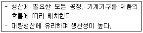
- 혼성식 레이아웃
- 고정식 레이아웃
- 제품중심의 레이아웃
- 공정중심의 레이아웃
(정답률: 84%)
15. 극장건축에서 그린룸(green room)의 역할로 가장 알맞은 것은?
- 의상실
- 배경제작실
- 관리관계실
- 출연대기실
(정답률: 86%)
16. 쇼핑센터의 공간구성에서 고객을 각 상점에 유도하는 주요 보행자 동선인 동시에 고객의 휴식처로서의 기능을 갖고 있는 곳은?
- 몰(Mall)
- 허브(Hub)
- 코드(Court)
- 핵상점(Magnet store)
(정답률: 86%)
17. 다음 중 터미널 호텔의 종류에 속하지 않은 것은?
- 해변 호텔
- 부두 호텔
- 공항 호텔
- 철도역 호텔
(정답률: 83%)
18. 전시공간의 특수전시기법에 관한 설명으로 옳지 않은 것은?
- 파노라마 전시는 전체의 맥락이 중요하다고 생각될 때 사용된다.
- 하모니카 전시는 동일 종류의 전시물을 반복하여 전시할 경우에 유리하다.
- 디오라마 전시는 하나의 사실 또는 주제의 시간 상황을 고정시켜 연출하는 기법이다.
- 아일랜드 전시는 벽면 전시 기법으로 전체 벽면의 일부만을 사용하며 그림과 같은 미술품 전시에 주로 사용된다.
(정답률: 83%)
19. 18세기에서 19세기 초에 있었던 신고전주의 건축의 특징으로 옳은 것은?
- 장대하고 허식적인 벽면 장식
- 고딕건축의 정열적인 예술창조 운동
- 각 시대의 건축양식의 자유로운 선택
- 고대 로마와 그리스 건축의 우수성에 대한 모방
(정답률: 70%)
20. 다음과 같은 특징을 갖는 그리스 건축의 오더는?
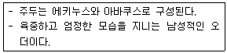
- 코린트 오더
- 도리스 오더
- 이오니아 오더
- 컴포지트 오더
(정답률: 71%)
2과목: 건축시공
21. 압연강재가 냉각될 때 표면에 생기는 산화철 표피를 무엇이라 하는가?
- 스패터
- 밀스케일
- 슬래그
- 비드
(정답률: 67%)
22. 콘크리트 이어치기에 관한 설명으로 옳지 않은 것은?
- 보의 이어치기는 전단력이 가장 적은 스팬의 중앙부에서 수직으로 한다.
- 슬래브(Slab)의 이어치기는 가장자리에서 한다.
- 아치의 이어치기는 아치축에 직각으로 한다.
- 기둥의 이어치기는 바닥판 윗면에서 수평으로 한다.
(정답률: 61%)
23. 시멘트의 액체방수에 관한 설명으로 옳지 않은 것은?
- 값이 저렴하고 시공 및 보수가 용이한 편이다.
- 바탕의 상태가 습하거나 수분이 함유되어 있더라도 시공할 수 있다.
- 옥상 등 실외에서 효력의 지속성을 기대할 수 없다.
- 바탕콘크리트의 침하, 경화 후의 건조수축, 균열 등 구조적 변형이 심한 부분에서도 사용할 수 있다.
(정답률: 67%)
24. 다음 중 건설사업관리(CM)의 주요업무로 옳지 않은 것은?
- 입찰 및 계약관리 업무
- 건축물의 조사 또는 감정 업무
- 제네콘(genecon)관리 업무
- 현장조직 관리 업무
(정답률: 56%)
25. 발주자가 시공자에게 공사를 발주하는 경우 계약방식에 의한 시공방식으로 옳지 않은 것은?(오류 신고가 접수된 문제입니다. 반드시 정답과 해설을 확인하시기 바랍니다.)
- 보증방식
- 직영방식
- 실비정산방식
- 단가도급방식
(정답률: 50%)
26. 다음 중 회전문(revolving door)에 관한 설명으로 옳지 않은 것은?(문제 오류로 실제 시험에서는 1,2 번이 정답처리 되었습니다. 여기서는 1번을 누르면 정답 처리 됩니다.)
- 큰 개구부나 칸막이를 가변성이 있게 한 장치의 문이다.
- 회전날개 140㎝, 1분 10회 회전하는 것이 보통이다.
- 원통형의 중심축에 돌개철물을 대어 자유롭게 회전시키는 문이다.
- 사람의 출입을 조절하고 외기의 유입과 실내공기의 유출을 막을 수 있다.
(정답률: 63%)
27. 얇은 강판에 동일한 간격으로 펀칭하고 잡아 늘려 그물처럼 만든 것으로 천장, 벽, 처마둘레 등의 미장바탕에 사용하는 재료로 옳은 것은?
- 와이어 라스(wire lath)
- 메탈 라스(metal lath)
- 와이어 메쉬(wire mesh)
- 펀칭 메탈(punching metal)
(정답률: 57%)
28. 다음 중 도장공사를 위한 목부 바탕 만들기 공정으로 옳지 않은 것은?
- 오염, 부착물의 제거
- 송진의 처리
- 옹이땜
- 바니쉬칠
(정답률: 77%)
29. 다음 중 미장재료 중 기경성 재료로만 구성된 것은?
- 회반죽, 석고 플라스터, 돌로마이트 플라스터
- 시멘트 모르타르, 석고 플라스터, 회반죽
- 석고 플라스터, 돌로마이트 플라스터, 진흙
- 진흙, 회반죽, 돌로마이트 플라스터
(정답률: 73%)
30. 건물의 중앙부만 남겨두고, 주위부분에 먼저 흙막이를 설치하고 굴착하여 기초부와 주위벽체, 바닥판 등을 구축하고 난 다음 중앙부를 시공하는 터파기 공법은?
- 복수공법
- 지멘스웰 공법
- 트렌치 컷 공법
- 아일랜드 컷 공법
(정답률: 72%)
31. 벽체구조에 관한 설명으로 옳지 않은 것은?
- 목조 벽체를 수평력에 견디게 하고 안정한 구조로 하기 위해 귀잡이를 설치한다.
- 벽돌구조에서 각층의 대린벽으로 구획된 각 벽에 있어서 개구부의 폭의 합계는 그 벽의 길이의 2분의 1 이하로 하여야 한다.
- 목조 벽체에서 샛기둥은 본기둥 사이에 벽체를 이루는 것으로서 가새의 옆휨을 막는데 유효하다.
- 너비 180㎝가 넘는 문꼴의 상부에는 철근콘크리트 인방보를 설치하고, 벽돌벽면에서 내미는 창 또는 툇마루 등은 철골 또는 철근콘크리트로 보강한다.
(정답률: 49%)
32. 다음 조건에 따라 바닥재로 화강석을 사용할 경우 소요되는 화강석의 재료량(할증률 고려)으로 옳은 것은?
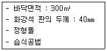
- 315m2
- 321m2
- 330m2
- 345m2
(정답률: 57%)
33. 콘크리트 펌프 사용에 관한 설명으로 옳지 않은 것은?
- 콘크리트 펌프를 사용하여 시공하는 콘크리트 소요의 워커빌리티를 가지며, 시공 시 및 경화 후에 소정의 품질을 갖는 것이어야 한다.
- 압송관의 지름 및 배관의 경로는 콘크리트의 종류 및 품질, 굵은골재의 최대치수, 콘크리트 펌프의 기종, 압송조건, 압송 작업의 용이성, 안전성 등을 고려하여 정하여야 한다.
- 콘크리트 펌프의 형식은 피스톤식이 적당하고 스퀴즈식은 적용이 불가하다.
- 압송은 계획에 따라 연속적으로 실시하며, 되도록 중단되지 않도록 하여야 한다.
(정답률: 79%)
34. PERT-CPM 공정표 작성 시에 EST와 EFT의 계산방법 중 옳지 않은 것은?
- 작업의 흐름에 따라 전진 계산한다.
- 선행작업이 없는 첫 작업의 EST는 프로젝트의 개시시간과 동일하다.
- 어느 작업의 EFT는 그 작업의 EST에는 소요일수를 더하여 구한다.
- 복수의 작업에 종속되는 작업의 EST는 선행작업 중 EFT의 최소값으로 한다.
(정답률: 76%)
35. 웰포인트(Well point)공법에 관한 설명으로 옳지 않은 것은?
- 인접 대진에서 지하수위 저하로 우물 고갈의 우려가 있다.
- 투수성이 비교적 낮은 사질토층까지도 강제배수가 가능하다.
- 압밀침하가 발생하지 않아 주변 대지, 도로 등의 균열발생 위험이 없다.
- 지반의 안전성을 대폭 향상시킨다.
(정답률: 73%)
36. 서중콘크리트에 관한 설명으로 옳은 것은?
- 동일 슬럼프를 얻기 위한 단위수량이 많아진다.
- 장기강도의 증진이 크다.
- 콜드조인트가 쉽게 발생하지 않는다.
- 워커빌리티가 일정하게 유지된다.
(정답률: 61%)
37. 다음 그림과 같은 건물에서 G1과 같은 보가 8개 있다고 할 때 보의 총 콘크리트량을 구하면? (단, 보의 단면상 슬래브와 겹치는 부분은 제외하며, 철근량은 고려하지 않는다.)
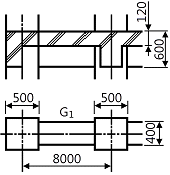
- 11.52m2
- 12.23m2
- 13.44m2
- 15.36m2
(정답률: 54%)
38. 철골의 구멍뚫기에서 이형철근 D22의 관통구멍의 구멍지격으로 옳은 것은?
- 24㎜
- 28㎜
- 31㎜
- 35㎜
(정답률: 42%)
39. 도장공사 시 희석제 및 용제로 활용되지 않은 것은?
- 테레빈유
- 벤젠
- 티탄백
- 나프타
(정답률: 48%)
40. 건축공사의 원가계산상 현장의 공사용수설비는 어느 항목에 포함되는가?
- 재료비
- 외주비
- 가설공사비
- 콘크리트 공사비
(정답률: 77%)
3과목: 건축구조
41. 그림과 같은 구조물에 있어 AB부재의 재단모멘트 MAB는?
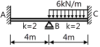
- 0.5kN·m
- 1kN·m
- 1.5kN·m
- 2kN·m
(정답률: 53%)
42. 고력볼트 1개의 인장파단 한계상태에 대한 설계인장 강도는? (단, 볼트의 등급 및 호칭은 F10T, M24, ø=0.75)
- 254kN
- 284kN
- 304kN
- 324kN
(정답률: 41%)
43. 철골조 주각부분에 사용하는 보강재에 해당되지 않는 것은?
- 윙플레이트
- 데크플레이트
- 사이드앵글
- 클립앵글
(정답률: 67%)
44. 그림과 같은 단순 인장접합부의 강도한계상태에 따른 고장력볼트의 설계전단강도는? (단, 강재의 재질은 SS275, 고장력볼트 M22(F10T), 공칭전단강도 Fnv=500MPa, ø=0.75)
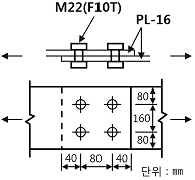
- 500kN
- 530kN
- 550kN
- 570kN
(정답률: 43%)
45. 철근의 부착성능에 영향을 주는 요인에 관한 설명으로 옳지 않은 것은?
- 이형철근이 원형철근보다 부착강도가 크다.
- 블리딩의 영향으로 수직철근이 수평철근보다 부착강도가 작다.
- 보통의 단위중량을 갖는 콘크리트의 부착강도는 콘크리트의 압축강도, 즉 √(fck)에 비례한다.
- 피복두께가 크면 부착강도가 크다.
(정답률: 53%)
46. 다음 트러스 구조물에서 부재력이 0이 되는 부재의 개수는?
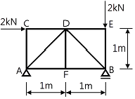
- 1개
- 2개
- 3개
- 4개
(정답률: 57%)
47. 강도설계법에서 그림과 같이 보의 이음이 없는 경우 요구되는 보의 최소폭 b는 약 얼마인가? (단, 전단철근의 구부림 내면반지름은 고려하지 않으며, 굵은골재의 최대치수는 25㎜, 피복두께 40㎜, 주철근 D22, 스터럽 D10㎜)
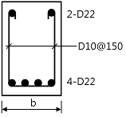
- 290㎜
- 330㎜
- 375㎜
- 400㎜
(정답률: 43%)
48. 그림과 같은 직각삼각형인 구조물에서 AC부재가 받는 힘은?(오류 신고가 접수된 문제입니다. 반드시 정답과 해설을 확인하시기 바랍니다.)
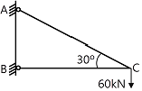
- 30kN
- 30√3kN
- 60√3kN
- 120kN
(정답률: 52%)
49. 그림과 같은 캔틸레버보의 자유단(B점)에서 처짐각은?
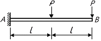
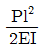
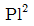
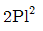
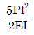
(정답률: 63%)
50. 직경 24mm의 봉강에 65kN의 인장력이 작용할 때 인장응력은 약 얼마인가?
- 128MPa
- 136MPa
- 144MPa
- 150MPa
(정답률: 61%)
51. 과도한 처짐에 의해 손상되지 쉬운 비구조요소를 지지 또는 부착하지 않은 바닥구조의 활하중 L에 의한 순간처짐의 한계는?
- l/180
- l/240
- l/360
- l/480
(정답률: 47%)
52. 다음 그림과 같은 두 개의 단순보에 크기가 같은 (P=ωL) 하중이 작용할 때, A점에서 발생하는 처짐각의 비율(가 : 나)은? (단, 부재의 EI는 일정하다.)(문제 오류로 가답안 발표시 2번으로 발표되었으나, 확정답안 발표시 2, 3번이 정답처리 되었습니다. 여기서는 가답안인 2번을 누르면 정답 처리 됩니다. 자세한 내용은 해설을 참고하세요.)
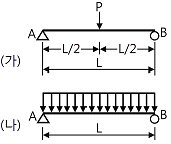
- 1 : 1.5
- 1.5 : 1
- 1 : 0.67
- 0.67 : 1
(정답률: 63%)
53. 그림과 같은 3회전단의 포물선 아치가 등분포하중을 받을 때 아치부재의 단면력에 관한 설명으로 옳은 것은?
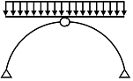
- 축방향력만 존재한다.
- 축방향력과 휨모멘트가 존재한다.
- 전단력과 축방향력이 존재한다.
- 축방향력, 전단력, 휨모멘트가 모두 존재한다.
(정답률: 69%)
54. 말뚝기초에 관한 설명으로 옳지 않은 것은?
- 사질토(砂質土)에는 마찰말뚝의 적용이 불가하다.
- 말뚝 내력(耐力)의 결정방법은 재하시험이 정확하다.
- 철근콘크리트 말뚝은 현장에서 제작 양생하여 시공할 수도 있다.
- 마찰말뚝은 한 곳에 집중하여 시공하지 않는 것이 좋다.
(정답률: 59%)
55. 폭 250㎜, fck=-30MPa인 철근콘크리트 보 부재의 압축변형률 €c=0.003일 경우 인장철근의 변형률은? (단, d=440㎜, As=1520.1mm2, fy=400MPa)
- 0.00197
- 0.00368
- 0.0⑤23
- 0.00857
(정답률: 29%)
56. 강도설계법에 의한 띠철근을 가진 철근콘크리트의 기둥설계에서 단주의 최대 설계축하중은 약 얼마인가? (단, 기둥의 크기는 400mm×400mm, fck=24MPa, fy=400MPa, 12-D22(Ast=4,644mm2), ø=0.65)
- 2,452kN
- 2,525kN
- 2,614kN
- 3,234kN
(정답률: 53%)
57. 다음 부정정 구조물에서 A단에 도달하는 모멘트의 크기는 얼마인가?
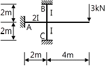
- 1.5kN·m
- 2.0kN·m
- 2.5kN·m
- 3.0kN·m
(정답률: 47%)
58. 그림과 같은 단순보에서 최대 처짐은? (단, 보의 단면 (b×h)은 200㎜×300㎜, E=200,000MPa)
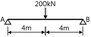
- 13.6㎜
- 18.1㎜
- 23.7㎜
- 27.1㎜
(정답률: 51%)
59. 고층건물의 구조형식 중에서 건물의 중간층에 대형 수평부재를 설치하여 횡력을 외곽기둥이 분담할 수 있도록 한 형식은?
- 트러스 구조
- 튜브 구조
- 골조 아웃리거 구조
- 스페이스 프레임 구조
(정답률: 62%)
60. 강구조에 관한 설명으로 옳지 않은 것은?
- 장스팬의 구조물이나 고층 구조물에 적합하다.
- 재료가 불에 타지 않기 때문에 내화성이 크다.
- 강재는 다른 구조재료에 비하여 균질도가 높다.
- 단면에 비하여 부재길이가 비교적 길고 두께가 얇아 좌굴하기 쉽다.
(정답률: 64%)
4과목: 건축설비
61. 에스컬레이터의 경사도는 최대 얼마 이하로 하여야 하는가?(단, 공칭속도가 0.5m/s를 초과하는 경우이며 기타 조건은 무시)
- 25°
- 30°
- 35°
- 40°
(정답률: 71%)
62. 다음과 같은 조건에 있는 실의 틈새바람에 의한 현열부하는?
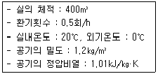
- 약 654W
- 약 972W
- 약 1347W
- 약 1654W
(정답률: 68%)
63. 각각의 최대 수용 전력의 합이 1200kW, 부등률이 1.2일 때 합성 최대 수용 전력은?
- 800kW
- 1000kW
- 1200kW
- 1440kW
(정답률: 58%)
64. 다음 중 건축물 실내공간의 잔향시간에 가장 큰 영향을 주는 것은?
- 실의 용적
- 음원의 위치
- 벽체의 두께
- 음원의 음압
(정답률: 70%)
65. 다음 설명에 알맞은 급수 방식은?
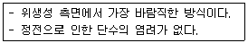
- 수도직결방식
- 고가수조방식
- 압력수조방식
- 펌프직송방식
(정답률: 75%)
66. 자동화재탐지설비의 감지기 중 주위의 온도상승률이 일정한 값을 초과하는 경우 동작하는 것은?
- 차동식
- 정온식
- 광전식
- 이온화식
(정답률: 63%)
67. 습공기를 가열하였을 경우 상태량이 변하지 않는 것은?
- 절대습도
- 상대습도
- 건구온도
- 습구온도
(정답률: 79%)
68. 대기압 하에서 0℃의 물이 0℃의 얼음으로 될 경우의 체적 변화에 관한 설명으로 옳은 것은?
- 체적이 4% 팽창한다.
- 체적이 4% 감소한다.
- 체적이 9% 팽창한다.
- 체적이 9% 감소한다.
(정답률: 58%)
69. 급수배관의 설계 및 시공상의 주의점에 관한 설명으로 옳지 않은 것은?
- 급수관의 기울기는 1/100을 표준으로 한다,
- 수평배관에는 공기나 오물이 정체하지 않도록 한다.
- 급수주관으로부터 분기하는 경우는 티(tee)를 사용한다.
- 음료용 급수관과 다른 용도의 배관을 크로스 커넥션하지 않도록 한다.
(정답률: 63%)
70. 환기에 관한 설명으로 옳지 않은 것은?
- 화장실은 송풍기(급기팬)와 배풍기(배기팬)를 설치하는 것이 일반적이다.
- 기밀성이 높은 주택의 경우 잦은 기계 환기를 통해 실내 공기의 오염을 낮추는 것이 바람직하다.
- 병원의 수술실은 오염공기가 실내로 들어오는 것을 방지하기 위해 실내 압력을 주변공간보다 높게 설정한다.
- 공기의 오염농도가 높은 도로에 면해 있는 건물의 경우, 공기조화설비 계통의 외기도입구를 가급적 높은 위치에 설치한다.
(정답률: 72%)
71. 방열기의 입구 수온이 90℃이고 출구 수온이 80℃이다. 난방부하가 3000W인 방을 온수난방 할 경우 방열기의 온수순환량은?(단, 물의 비열은 4.2J/㎏·K로 한다.)(오류 신고가 접수된 문제입니다. 반드시 정답과 해설을 확인하시기 바랍니다.)
- 143㎏/h
- 257㎏/h
- 368㎏/h
- 455㎏/h
(정답률: 49%)
72. 다음 중 최근 저압선로의 배선보호용 차단기로 가장 많이 사용되는 것?
- ACB
- GCB
- MCCB
- ABCB
(정답률: 65%)
73. 어떤 사무실의 취득 현열량이 15000W일 때 실내온도를 26℃로 유지하기 위하여 16℃의 외기를 도입할 경우, 실내에 공급하는 송풍량은 얼마로 해야 하는가? (단, 공기의 정압비열은 1.01kJ/㎏·K, 밀도는 1.2㎏/m3이다.)
- 2455m3/h
- 4455m3/h
- 6455m3/h
- 8455m3/h
(정답률: 54%)
74. 공기조화방식 중 냉풍과 온풍을 공급받아 각 실 또는 각 존의 혼합유닛에서 혼합하여 공급하는 방식은?
- 단일덕트방식
- 이중덕트방식
- 유인유닛방식
- 팬코일유닛방식
(정답률: 72%)
75. 지역난방 방식에 관한 설명으로 옳지 않은 것은?
- 열원설비의 집중화로 관리가 용이하다.
- 설비의 고도화로 대기오염 등 공해를 방지 할 수 있다.
- 각 건물의 이용시간차를 이용하면 보일러의 용량을 줄일 수 있다.
- 고온수난방을 채용할 경우 감압장치가 필요하며 응축수 트랩이나 한수관이 복잡해진다.
(정답률: 57%)
76. 개방형헤드를 사용하는 연결살수설비에 있어서 하나의 송수구역에 설치하는 살수헤드의 수는 최대 얼마 이하가 되도록 하여야 하는가?
- 10개
- 20개
- 30개
- 40개
(정답률: 62%)
77. 배수트랩의 봉수파괴 원인 중 통기관을 설치함으로써 봉수파괴를 방지할 수 있는 것이 아닌 것은?
- 분출작용
- 모세관작용
- 자기사이펀작용
- 유도사이펀작용
(정답률: 59%)
78. 다음의 간선 배전방식 중 분전반에서 사고가 발생했을 때 그 파급 범위가 가장 좁은 것은?
- 평행식
- 방사선식
- 나뭇가지식
- 나뭇가지 평행식
(정답률: 73%)
79. 조명기구를 사용하는 도중에 광원의 능률저하나 기구의 오염, 손상 등으로 조도가 점차 저하되는데, 인공조명 설계 시 이를 고려하여 반영하는 계수는?
- 광도
- 조명률
- 실지수
- 감광 보상률
(정답률: 73%)
80. 일반적으로 가스사용시설의 지상배관 표면 색상은 어떤 색상으로 도색하는가?
- 백색
- 황색
- 청색
- 적색
(정답률: 72%)
5과목: 건축법규
81. 건축법령상 공사감리자가 수행하여야 하는 감리업무에 속하지 않는 것은?
- 공정표의 작성
- 상세시공도면의 검토·확인
- 공사현장에서의 안전관리의 지도
- 설계변경의 적정여부의 검토·확인
(정답률: 76%)
82. 다음은 대지와 도로의 관계에 관한 기준 내용이다. ( ) 안에 알맞은 것은? (단, 축사, 작물 재배사, 그 밖에 이와 비슷한 건축물로서 건축조례로 정하는 규모의 건축물은 제외)
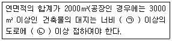
- ㉠ 2m, ㉡ 4m
- ㉠ 4m, ㉡ 2m
- ㉠ 4m, ㉡ 6m
- ㉠ 6m, ㉡ 4m
(정답률: 68%)
83. 다음 중 제2종 일반주거지역 안에서 건축할 수 있는 건축물에 속하지 않는 것은?
- 종교시설
- 운수시설
- 노유자시설
- 제1종 근린생활시설
(정답률: 66%)
84. 피난층 이외 층으로서 피난층 또는 지상으로 통하는 직통계단을 2개소 이상 설치하여야 하는 대상기준으로 옳지 않은 것은?
- 지하층으로서 그 층 거실의 바닥면적의 합계가 200m2 이상인 것
- 종교시설의 용도로 쓰는 층으로서 그 층에서 해당 용도로 쓰는 바닥면적의 합계가 200m2 이상인 것
- 판매시설의 용도로 쓰는 3층 이상의 층으로서 그 층의 해당 용도로 쓰는 거실의 바닥면적의 합계가 200m2 이상인 것
- 업무시설 중 오피스텔의 용도로 쓰는 층으로서 그 층의 해당 용도로 쓰는 거실의 바닥면적의 합계가 200m2 이상인 것
(정답률: 54%)
85. 국토의 계획 및 이용에 관한 법률에 따른 용도 지역에서의 용적률 최대한도 기준이 옳지 않은 것은? (단, 도시지역의 경우)
- 주거지역 : 500퍼센트 이하
- 녹지지역 : 100퍼센트 이하
- 공업지역 : 400퍼센트 이하
- 상업지역 : 1000퍼센트 이하
(정답률: 64%)
86. 다음 중 도시·군관리계획에 포함되지 않는 것은?
- 도시개발사업이나 정비사업에 관한 계획
- 광역계획권의 장기발전방향을 제시하는 계획
- 기반시설의 설치·정비 또는 개량에 관한 계획
- 용도지역·용도지구의 지정 또는 변경에 관한 계획
(정답률: 73%)
87. 다음 중 허가 대상 건축물이라 하더라도 건축신고를 하면 건축허가를 받는 것으로 보는 경우에 속하지 않는 것은?
- 건축물의 높이를 4m 증축하는 건축물
- 연면적의 합계가 80m2인 건축물의 건축
- 연면적이 150m2이고 2층인 건물의 대수선
- 2층 건축물로서 바닥면적의 합계 80m2 를 증축하는 건축물
(정답률: 43%)
88. 부설주차장 설치대상 시설물이 종교시설인 경우, 부설주차장 설치기준으로 옳은 것은?
- 시설면적 50m2 당 1대
- 시설면적 100m2당 1대
- 시설면적 150m2당 1대
- 시설면적 200m2당 1대
(정답률: 70%)
89. 건축물에 설치하는 지하층의 구조에 관한 기준 내용으로 옳지 않은 것은?
- 지하층에 설치하는 비상탈출구의 유효너비는 0.75m 이상으로 할 것
- 거실의 바닥면적의 합계가 1000m2 이상인 층에는 환기설비를 설치할 것
- 지하층의 바닥면적이 300m2 이상인 층에는 식수공급을 위한 급수전을 1개소 이상 설치할 것
- 거실의 바닥면적이 33m2 이상인 층에는 직통계단 외에 피난층 또는 지상으로 통하는 비상탈출구를 설치할 것
(정답률: 54%)
90. 비상용승강기 승강장의 구조에 관한 기준 내용으로 옳지 않은 것은?
- 승강장은 각층의 내부와 연결될 수 있도록 할 것
- 벽 및 반자가 실내에 접하는 부분의 마감재료는 준불연재료로 할 것
- 옥내에 설치하는 승강장의 바닥면적은 비상용 승강기 1대에 대하여 6m2 이상으로 할 것
- 피난층이 있는 승강장의 출입구로부터 도로 또는 공지에 이르는 거리가 30m 이하일 것
(정답률: 75%)
91. 다음은 건축법령상 다세대주택의 정의이다. ( ) 안에 알맞은 것은?
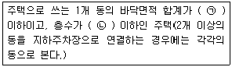
- ㉠ 330m2, ㉡ 3개 층
- ㉠ 330m2, ㉡ 4개 층
- ㉠ 660m2, ㉡ 3개 층
- ㉠ 660m2, ㉡ 4개 층
(정답률: 65%)
92. 공작물을 축조할 때 특별자치시장·특별자치도지사 또는 시장·군수·구청장에게 신고를 하여야 하는 다생 공작물 기준으로 옳지 않은 것은? (단, 건축물과 분리하여 축조하는 경우)(2020년 12월 15일 개정된 규정 적용됨)
- 높이 6m를 넘는 굴뚝
- 높이 4m를 넘는 광고탑
- 높이 3m를 넘는 장식탑
- 높이 2m를 넘는 옹벽 또는 담장
(정답률: 62%)
93. 건축물을 신축하는 경우 옥상에 조경을 150m2 시공했다. 이 경우 대지의 조경면적은 최소 얼마 이상으로 하여야 하는가? (단, 대지면적은 1500m2 이고, 조경설치 기준은 대지면적의 10%이다.)
- 25m2
- 50m2
- 75m2
- 100m2
(정답률: 64%)
94. 높이 31m를 넘는 각 층의 바닥면적 중 최대 바닥면적이 5000m2인 업무시설에 원칙적으로 설치하여야 하는 비상용 승강기의 최소 대수는?
- 1대
- 2대
- 3대
- 4대
(정답률: 48%)
95. 건축물의 거실에 국토교통부령으로 정하는 기준에 따라 배연설비를 하여야 하는 대상 건축물에 속하지 않는 것은? (단, 피난층의 거실은 제외하며, 6층 이상인 건축물의 경우)
- 종교시설
- 판매시설
- 위락시설
- 방송통신시설
(정답률: 73%)
96. 일반주거지역에서 건축물을 건축하는 경우 건축물의 높이 5m인 부분은 정북 방향의 인접 대지 경계선으로부터 원칙적으로 최소 얼마 이상을 띄어 건축하여야 하는가?
- 1.0m
- 1.5m
- 2.0m
- 3.0m
(정답률: 70%)
97. 지하식 또는 건축물식 노외주차장의 차로에 관한 기준 내용으롤 옳지 않은 것은? (단, 이륜자동차전용 노외주차장이 아닌 경우)
- 높이는 주차바닥면으로부터 2.3m 이상으로 하여야 한다.
- 경사로의 종단경사도는 직선 부분에서는 17%를 초과하여서는 아니 된다.
- 곡선 부분은 자동차가 4m 이상의 내변반경으로 회전할 수 있도록 하여야 한다.
- 주차대수 규모가 50대 이상인 경우의 경사로는 너비6m 이상인 2차로를 확보하거나 진입차로와 진출차로를 분리하여야 한다.
(정답률: 63%)
98. 용도지역의 세분에 있어 주거기능을 위주로 이를 지원하는 일부 상업기능 및 업무기능을 보완하기 위하여 필요한 지역은?
- 준주거지역
- 전용주거지역
- 일반주거지역
- 유통상업지역
(정답률: 76%)
99. 주차장 수급 실태 조사의 조사구역 설정에 관한 기준 내용으로 옳지 않은 것은?
- 실태조사의 주기는 3년으로 한다.
- 사각형 또는 삼각형 형태로 조사구역을 설정한다.
- 각 조사 구역은「건축법」에 따른 도로를 경계로 구분한다.
- 조사구역 바깥 경계선의 최대거리가 500m를 넘지 않도록 한다.
(정답률: 66%)
100. 태양열을 주된 에너지원으로 이용하는 주택의 건축면적 산정 시 기준이 되는 것은?
- 외벽의 외곽선
- 외벽의 내측 벽면선
- 외벽 중 내측 내력벽의 중심선
- 외벽 중 외측 비내력벽의 중심선
(정답률: 79%)